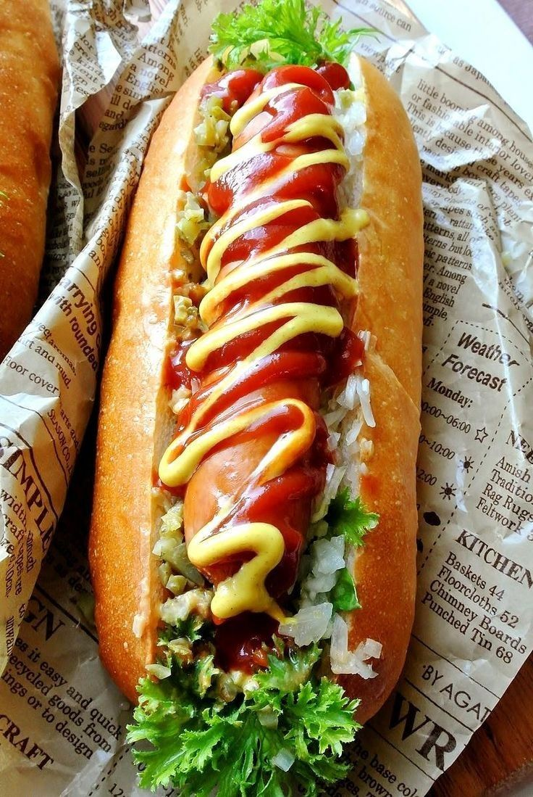

HOT DOG

Ingredients
- 4 hot dog wieners
- 4 hot dog or sausage buns
- 1 cup tomato pizza sauce
- 1 cup sautéed onions, mushrooms and peppers
- ½ cup sliced green olives
- 1 cup shredded mozzarella cheese
- 2 tablespoons flat-leaf parsley, chopped, for garnish
Instructions
- Open buns on work surface. Add a helping of pizza sauce onto each, spreading it across. Place one cooked wiener onto each bun. Sprinkle a small handful of olives on one side of hot dog. Add some of the sautéed vegetables across the other. Sprinkle with cheese. Place prepared hot dogs into an oven-safe casserole or rectangular baking pan. Transfer to preheated 250°F oven and bake for 10-15 minutes or until cheese has melted and bun is toasted. Garnish with chopped parsley. Serve immediately.